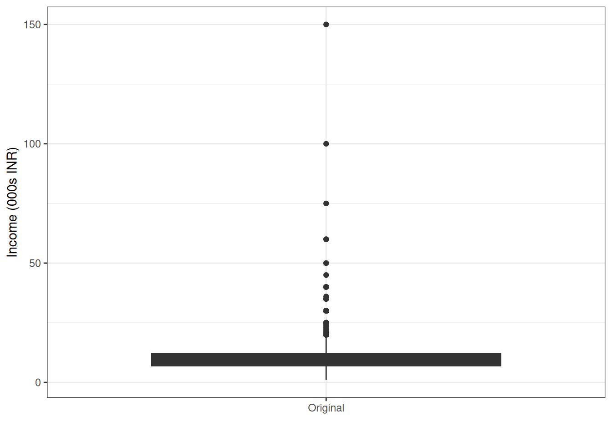
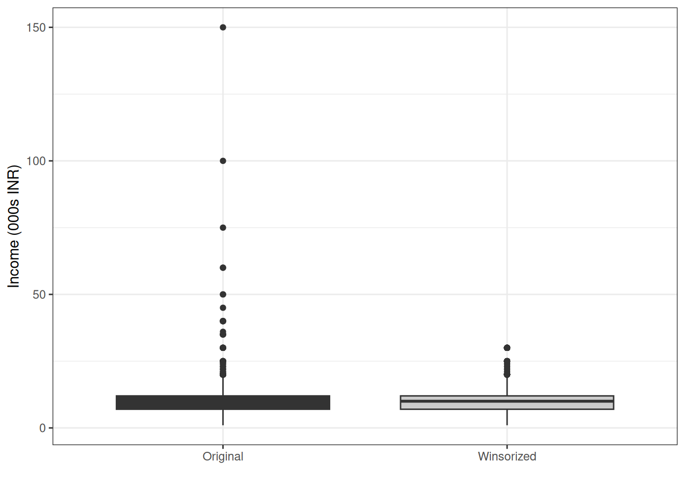
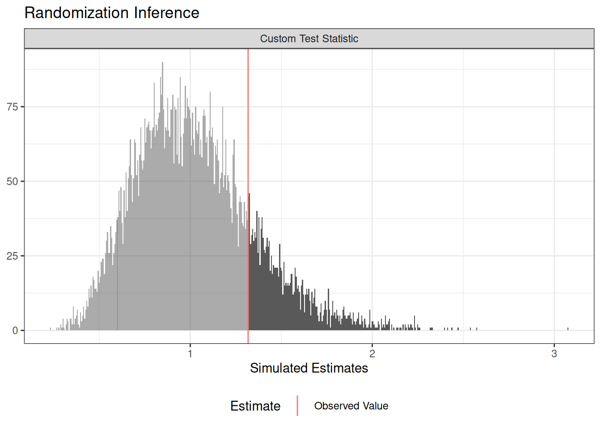

10 Things on Your Checklist for Analyzing an Experiment
Summary
This guide provides practical tools on what to do with your data once you’ve run an experiment. This guide is geared towards anyone involved in the life cycle of an experimental project: from analysts to implementers and project managers. If you’re not the one directly involved in analyzing the data, these are some key things to look for in reports of analysis of experimental data. If you are the one analyzing the data, this guide provides instructions and R code on how to do so.
1 BEFORE seeing (or receiving) your data, file an amendment to your pre-analysis plan if there are changes to the design or planned analysis
Before you look at the data (even better: before you receive it), pause and ask yourself: what has changed from what I had planned and pre-registered - in terms of both design and analysis - and what are the consequences of those changes for my pre-analysis plan (PAP)? If you think changes to the PAP are required, file an amendment to the PAP at the registry where you initially pre-registered your experiment. It’s good to do this prior to receiving the data, if possible. To read more on PAPs, see 10 Things to Know About Pre-Analysis Plans.
Things can change from conception to implementation. Perhaps you had planned to randomize at the individual-level, but instead you ended up having to conduct a cluster randomization. Alternatively, did an event happen that cut your study short, reducing your sample size? Both of these design changes would have implications for how you should analyze the data. In the first instance, we recommend filing an amendment reflecting the cluster-randomization and corresponding changes to your analyses. In the second instance, you may consider the implications for your reduced sample size for power, and whether or not you need to change your main specification (perhaps by adding covariates, or focusing on a main effect rather than an interaction effect) in order to be powered enough to detect effects if they exist.
2 Treatment variable: Confirm its randomization
First things first, it is important to verify that your treatment was successfully randomized according to what you had planned in your design. Without successful randomization, it’s hard for the research community and policymakers to have confidence in your conclusions from the experiment, so it’s key that you (and others) can verify that your treatment was assigned randomly in the way that you planned.
First, you can trace back to the code or software that was responsible for generating the randomization. If this was done in Qualtrics or on SurveyCTO, this would involve going back to the original software and ensuring that the particular survey module was coded correctly. If you worked with a provider to code up your online survey, you could schedule a meeting with them to walk through verifying the coding of the randomization. If this was done in R, there should be at least 2 lines of code: one that set a seed so that the randomization would be reproducible, and another that actually randomizes the treatment assignment. Note that the second line of code depends on the type of randomization you’d conducted (see 10 Things You Need to Know About Randomization).
3 Variable inspection: Locating and understanding your data variables
3.1 Checking the values of your variables
In addition to verifying that the treatment was correctly assigned in the software that you used, it’s important to verify what the treatment variable in your data set - produced by the code or software - actually means. This means checking that values of the treatment assignment variable correspond to the values assigned in the randomization process in R or in the software used to assign treatment. Does a 1 produced by the software correspond to treatment, and 0 to control? For a three-arm experiment, software like SurveyCTO may produces values 1, 2, and 3 for the treatment assignment variable. It’s advisable to verify that what they think they’re analyzing corresponds to the actual treatment assigned.
3.2 Dealing with (non)-compliance
If non-compliance with treatment assignment is possible in your study, it’s advisable to also inspect the variable that indicates whether the treatment was received. In a field experiment, if a subject was assigned to a skills training (treatment assignment = 1), did they actually attend and receive the intended information on skills (treatment receipt = 1)? In a survey experiment, did a subject assigned to receive watch a video to provoke positive emotions (treatment assignment = 1) actually report watching the video and internalizing its content (treatment receipt = 1)? A variable that indicates whether a subject actually received the treatment it was assigned to is key for thinking about things like complier average causal effects (CACEs, see 10 Things You Need to Know About the Local Average Treatment Effect). Understanding what the treatment receipt variable means, and what each of its values corresponds to (does 1 correspond to treatment receipt, and 0 to lack of receipt?) is also important.
It’s worth emphasizing that coming up with the definition of what it means to comply in a given experiment - and how to measure this compliance - is non-trivial. This is something you define ex ante, and it derives from your theory about what it is that actually constitutes your treatment. You may also have to construct your measure of compliance from your data. If your intervention is a series of financial literacy trainings, maybe someone counts as having complied if she has attended at least half of these trainings. This could be constructed from data on each subject’s attendance at each individual meeting. This choice should be justified by your theory of change and would ideally have been included in your pre-analysis plan. Having clear conceptualizations and valid measures of compliance in your experiment is not only helpful for estimating CACEs (as mentioned above), but also in helping you understand potential null results of your experiment. Perhaps your intervention didn’t have an impact because of a compliance issue – data on this may help you learn that the theory of change broke down at that first step.
3.3 Variable naming, coding, and missing data
It’s also useful to inspect the outcome and covariate variables that you plan to use in your analysis. This might include renaming them for easier coding and interpretation of your analysis code. If someone looks at your analysis code, it is generally easier for them to understand what a variable called “female” means, rather than if it is called “question_26_c_1”. Moreover, double checking the coding of one’s variables is best practice at this stage. For example, if female is the variable, make sure that the coding of the variable corresponds to what you think it does: does 1 indicate female, and 0 male, or has it been coded the other way around? The same goes for all variables in your data set. In addition, making sure that missing data are consistently coded with “NA” rather than a numeric value is important to ensure the integrity of data analysis. Sometimes, survey software may code missing data with 0 or 888; if you do not change these values to “NA”s, your data analysis will think that they correspond to numeric values of the variable of interest. Though this need not bias your estimation of the impact of the treatment, there are several ways you may go about addressing missingness in your covariates; for more on this, see 10 Things to Know About Missing Data.
4 Did treatment assignment go according to plan?
It’s generally good practice to inspect whether or not your treatment assignment did in fact work according to your expectations, depending on the design. This is separate from verifying the code or software that produced the randomization, as in 1 above. Instead, you can check the distribution of the values of treatment assignment, and see whether it corresponds to what you’d designed (see 10 Things You Need to Know About Randomization).
For example, if you conducted a complete randomization where 25 experimental subjects were to be assigned to control and 25 to treatment, did this play out in practice? You can run a simple tabulation of the treatment assignment variable and check. Alternatively, if you conducted a block randomization by gender and wanted to assign half of women to treatment and the other half to control (and the same for men), you can look at the distribution of treatment assignment values by gender. Although complete randomization is more common in field experiments, some survey experimental software uses simple randomization. In a survey experiment with two arms, the software will assign each respondent to treatment or control by flipping a Bernoulli coin that has a 50 percent chance of landing on heads (treatment) and a 50 percent chance of landing on tails (control).1 In this case, it’s okay if exactly 50 percent of your respondents don’t end up in treatment - we’d expect some variability due to the nature of the randomization. However, the percentage of units treated shouldn’t be too far from 50 percent. This would induce doubt that the randomization actually worked.
5 Checking outcome and covariate variables for outliers
Next, we recommend that you inspect the outcome and covariate variables for outlier values and decide what to do about these outliers. You can plot the distribution of the values of each variable (via a histogram or boxplot, for example), or ask your statistical software to produce a “summary” of the variable.
Deciding what to do about outliers requires substantive knowledge about what reasonable ranges are for the variables. For an age variable of a survey of only adults, for example, ranges from 18 to 85 might be reasonable. If a subject has a reported age of 2 or 1000, for example, this would raise concerns. Similarly, reported salary values outside of the range reasonable for the context that you work in might raise questions. Note that it’s possible to program your survey software ahead of data collection to restrict allowable values (for example, percent of one’s time spent on household labor can only be between 0 and 100, inclusive). See guide on 10 Things to Know About Survey Design for more on designing surveys smartly.
If you think a value of a variable is incorrectly coded, you can try to figure out what the correct value was. First, it’s possible to do some detective work. An enumerator may have accidentally added an extra digit to an otherwise correct value, for example, and you can follow-up with enumerators to clarify whether or not they made a mistake. Alternatively, you can go back to the source to verify the correct value of the variable for a particular observation. Imagine that an outcome variable is the result of an election, which was coded manually from archival resources or online images. In this case, it is relatively straightforward to return to the original newspaper source and/or image to verify the result of that election.
However, it’s often not possible to retrospectively find the correct value of a variable for a given unit. It may also not always be clear that the value in question is in fact incorrect. Perhaps there really was a respondent who had an annual salary of 1 million dollars. Many times, best practice is to leave the value alone; editing the value would bias results. In the case that, thanks to contextual knowledge, you are certain that a value has been incorrectly coded and you are unable to locate the correct value, you might consider marking the value as missing. Other times, researchers use techniques like winsorizing a variable, which replaces extreme values with less extreme values. This transforms data with the goal of limiting the impact of outliers. Another approach is to trim outlier values, which removes them entirely.
If you choose to make edits to values in your data, keep in mind two points. First, you should be blind to results and the treatment condition of the observation(s) when you edit or inspect data. See Standard operating procedures for Don Green’s lab at Columbia. Second, never overwrite the raw data. Instead, you can keep a code file that documents exactly the changes you make and produce a cleaned data file (while retaining the raw data file). This is key to the transparency and reproducibility of your results. One way to organize the data and code for your experiment is to have a raw data file, then the code scripts that clean the data, and the intermediate/final (clean) data on which you then run the analysis.
Changing the values of outliers is strongly discouraged when it comes to the outcome variable. That said, if you have reason to believe that an experimental subject has a particularly strange value on the outcome variable, or there was an error in its coding, then one might investigate this observation by speaking with enumerators and implementers or calling the original respondent to verify the value. If you don’t find evidence to suggest that a revision of the value is necessary, then leaving it and proceeding with your pre-registered analysis is the best way forward. If you do find evidence of an error, then best practice is to correct this error and report it in the main report of your experiment. Other options are to run the same analysis with and without the outlier(s), reporting these results in an appendix; one could also consider whether using test statistics that are less vulnerable to outliers make sense in supplementary hypothesis tests. Regardless of what additional analyses you do, it’s important to report the analysis that was initially planned in the PAP.
6 Checking for balance on pre-treatment covariates
After inspecting and cleaning treatment assignment, treatment receipt, covariate, and outcome data, we should next check for balance on pre-treatment covariates between treatment arms. Balance tests are a way of providing evidence that your randomization worked as expected. They probe an observable implication of random assignment of treatment: that treatment and control groups look the same, on average, in terms of pre-treatment characteristics.
Balance tests can be implemented in a number of different ways. In general, they ask whether imbalances in pre-treatment covariates across different experimental conditions are larger than what would be expected by chance. The balance test you run depends on your experimental design. Where you have a binary treatment and all units have the same probability of assignment to treatment, you can run a regression of the treatment assignment variable on your covariates and run an F-test for the null hypothesis that the coefficients on all covariates are jointly equal to zero. The \(p\)-value can be computed with randomization inference using this F-statistic. This is the approach we document in the example code below. If, for example, you conducted a block randomization with treatment probabilities that vary by block, you should adjust for this in the regression specification. We are interested in the F-test because we care about overall balance of covariates. One may also consider running equivalence tests instead of conventional balance tests.2
We often see balance tests that use t-tests to compare means among control units and treated units for each covariate separately. Although this is standard practice, we recommend the omnibus approach described just above for two reasons. If you detect an imbalance on a covariate, this does not necessarily mean that your randomization didn’t work as planned; it is not always cause for concern. If there are many covariates, imbalance may be detected on some covariate(s) just by chance. Second, this approach treats all covariate as equally important and informative about potential outcomes.3
If imbalance isn’t detected, then we proceed to the next step in the analysis. If imbalance is detected, additional work may be required. The first step is to comprehensively investigate whether the random assignment procedure and data handling went according to plan, or whether there were errors. If this investigation reveals no mistakes, then proceeding with one’s pre-specified analysis is a sensible path forward, while reporting that, due to chance, the realization of treatment assignment led to imbalance on covariates. Researchers sometimes decide to control for a covariate in a regression analysis if they see that it is imbalanced in conventional balance tests, but there are no settled guidelines on this approach. These covariates cannot be specified ex ante, because researchers don’t know what sort of draw they’ll get in their actualized randomization.4
7 Checking for differential attrition
Were you unable to measure outcomes for all of your experimental subjects? Sometimes, subjects leave the study or “attrit”, and we’re unable to measure their outcome. If whether the outcome is missing is independent of potential outcomes, then there is little harm. However, if attrition is related to potential outcomes, we need to worry about bias in our estimates of treatment effects.
There are several diagnostics to probe whether the attrition may be problematic. One approach entails coding up a variable that designates whether the outcome variable is missing (1) or not missing (0), and examining whether treatment assignment is a predictor for this missingness indicator. Another approach is to include covariates and/or treatment-by-covariate interactions in these models. We conventionally include all covariates that were pre-specified to be used in the balance test. In these approaches, one can use the F-statistic from these models to calculate \(p\)-values using randomization inference.
8 Adjust estimation procedures to match deviations from planned analysis
After you look at your data, you may wish to analyze the data differently than you had planned in your PAP. This happens regularly.
It’s common for much learning to occur between the moment a pre-analysis plan is filed, and the moment experimental data is ready to be analyzed. We learn more about a technique and how it should be implemented, a better way to specify our particular model, or another model that should be specified due to additional theoretical reflections. It also happens that we make mistakes or guess wrong about how things will play out in the data: maybe we’d planned to transform a variable into five categories, but the distribution of the variable is lumped into two groups, or the measurement did not go according to plan. These are all reasonable cases in which it would make sense to deviate from one’s pre-analysis plan.
It is best practice to indicate where you deviated from the PAP. This will enhance the transparency and the reproducibility of your research. We touch more on this in a point below.
9 Write replicable code to analyze data
The next step is to write up the code to analyze your data, if you hadn’t already done so at the pre-analysis plan stage. Best practice is to write the code when filing the pre-analysis plan, so it is ready to go when the data comes in. But if this isn’t the case, it’s fine to write the code in its entirety now. For more on how to write replicable and transparent code, see 10 Things You Need to Know About Project Workflow.
What are some best practices in writing up one’s analysis code? In general, the clearer, simpler, and more documented the code, the better. An example of well-documented, simple and transparent experimental code can be found in the replication materials of Gaikwad and Nellis (2021). First, one should never overwrite one’s raw experimental data. We’d recommend keeping the raw data in a separate folder within a replication file, writing and making publicly available the (separate) code that cleans the raw data, and then drawing on the cleaned data in the analysis code. Second, the code should be annotated. This includes both “macro” and “micro”-level comments. At a macro-level, it’s useful to signpost where we can find all analyses in the paper and appendices, by breaking up the code into sections that correspond to the sections in what you’ll write up. No guesswork should be needed to locate the code that produces your tables and figures. At a micro-level, writing in-line comments for specific lines of code also aids with transparency. We recommend writing in-line comments for key analyses as well as the reasoning underlying variable transformations. While there’s such a thing as having too much annotation, generally more is better and only increases the accessibility and legibility of your code. Finally, it is best practice to indicate what version of statistical packages were used in the analysis at the point that it was written. Packages may be modified in ways that “break” your code so that your analysis cannot be replicated.
10 Write up and justify deviations from preanalysis plan
As noted earlier, it’s very common to deviate from one’s pre-analysis plan. We recommend documenting and reporting all such deviations. As you’re conducting your analysis, keep track with a list of where you deviate from your PAP. Best practice is to highlight and justify each deviation.
Moreover, we recommend writing a pre-registered report of your experiment, where you analyze the data exactly as you had pre-registered your analysis. Cite this report in your study manuscript so readers can access it. One can follow the guidance of Banerjee et al. (2020), creating a short, publicly available report that they reference as a “populated PAP” that “populates the PAP to the extent possible and briefly discusses any barriers to doing so.”
A great example of a study that documents deviations from the pre-analysis plan in a transparent way and shows the original analyses that were in the pre-analysis plan, is Schiff et al. (2024)‘s study on politicians’ use of fake news and accountability.
11 Example code
In this example, we use data from Gaikwad and Nellis (2021).5 They employ a door-to-door field experiment in two Indian cities to improve the political inclusion of migrants. The treatment provided intensive assistance in applying for a voter identification card. They conduct a simple randomization where 2306 migrants were either assigned to treatment or control with a 50 percent probability. They look at the impact of the treatment on several outcomes, one of which is whether an individual voted in India’s 2019 national election.
Code
# load data analysis and graphing packageslibrary(tidyverse)
── Attaching core tidyverse packages ──────────────────────── tidyverse 2.0.0 ──
✔ dplyr 1.2.1 ✔ readr 2.2.0
✔ forcats 1.0.1 ✔ stringr 1.6.0
✔ ggplot2 4.0.3 ✔ tibble 3.3.1
✔ lubridate 1.9.5 ✔ tidyr 1.3.2
✔ purrr 1.2.2
── Conflicts ────────────────────────────────────────── tidyverse_conflicts() ──
✖ dplyr::filter() masks stats::filter()
✖ dplyr::lag() masks stats::lag()
ℹ Use the conflicted package (<http://conflicted.r-lib.org/>) to force all conflicts to become errors
Code
# load in the experimental data from Gaikwad and Nellis (2021)t1_experiment_df <-read_rds("gaikwad-nellis-2021-data-t1-experiment-df.Rds")
11.1 Inspect the treatment variable
Code
# values are 0 and 1# around 50 percent assigned to each condition, consistent with simple randomization# with p = 0.5 for all subjectslibrary(knitr)t1_experiment_df |>group_by(i_t1) |>summarise(n =n()) |>mutate(freq = n /sum(n))
i_t1
n
freq
0
1168
0.51
1
1138
0.49
11.2 Outcome and covariate inspection
Code
library(skimr)# NOTE: Gaikwad and Nellis (2021) look at the impact of the treatment on several outcomes,# one of which whether an individual voted in India's 2019 national election.# We're choosing to use just this one for exposition here.# outcome variable:# turnout in 2019 national election# values of 0 or 1, no strange values# 186 NAs which we'll investigate more later# covariates: # they use 10 covariates in their main specification:# 1) lagged outcome (voted previously), 2) whether female,# 3) age, 4) whether Muslim, 5) whether SC/ST, 6) whether has primary education,# 7) income, 8) whether married, 9) length of residence, 10) whether owns a home# # here, we investigate 3 of them: age, female, and income# age# range 18-88, no NAs# female# range 0-1, no NAs # income# authors are interested in income as 000s of rupees, so we transform the variable# range 1-150, no NAs# there seems to be some extreme outlierst1_experiment_df <- t1_experiment_df |>mutate(b_income_000 = b_income /1000)# we can summarize the outcome variable, as well as covariates, using the# skim function in the skimr packagedata_for_inpection <- t1_experiment_df |>select(e_voted_2019, b_age, b_female, b_income_000)skim(data_for_inpection)
Data summary
Name
data_for_inpection
Number of rows
2306
Number of columns
4
_______________________
Column type frequency:
numeric
4
________________________
Group variables
None
Variable type: numeric
skim_variable
n_missing
complete_rate
mean
sd
p0
p25
p50
p75
p100
hist
e_voted_2019
186
0.92
0.28
0.45
0
0
0
1
1
▇▁▁▁▃
b_age
0
1.00
28.80
10.06
18
21
26
33
88
▇▂▁▁▁
b_female
0
1.00
0.54
0.50
0
0
1
1
1
▇▁▁▁▇
b_income_000
0
1.00
10.44
6.32
1
7
10
12
150
▇▁▁▁▁
Code
# let's further inspect the income variable to check out outlierst1_experiment_df |>select(b_income_000) |>pivot_longer(cols =c("b_income_000"),values_to ="count" ) |>ggplot(aes(x =factor(name), y = count, fill =factor(name))) +geom_boxplot() +labs(xlab ="") +scale_fill_grey() +scale_color_grey() +theme_bw() +theme(legend.position ="none") +scale_x_discrete(labels =c("Original")) +xlab("") +ylab("Income (000s INR)")
Ignoring unknown labels:
• xlab : ""

12 Dealing with outliers
Code
library(scales)
Attaching package: 'scales'
The following object is masked from 'package:purrr':
discard
The following object is masked from 'package:readr':
col_factor
Code
# It's important to note that changing the values of outliers is strongly# discouraged when it comes to the outcome variable! # here, we're doing so with a covariate: income# income# as we mentioned before, and as Gaikwad and Nellis (2021) mention in their paper# there are some outliers in the income variable that we want to address# they choose to winsorize it# winsorize income variable# using the "squish" function via the "scales" package# Gaikwad and Nellis winsorize by setting all values higher than the # 99th percentile at the 99th percentile t1_experiment_df <- t1_experiment_df |>mutate(b_income_000_winsorized =squish(b_income_000, quantile(b_income_000, c(0, .99))))# inspect comparison of distributions of original vs. winsorized variable t1_experiment_df |>select(b_income_000, b_income_000_winsorized) |>pivot_longer(cols =c("b_income_000", "b_income_000_winsorized"),values_to ="count") |>ggplot(aes(x =factor(name), y = count, fill =factor(name)))+geom_boxplot() +labs(xlab ="") +scale_fill_grey() +scale_color_grey() +theme_bw() +theme(legend.position="none") +scale_x_discrete(labels =c("Original", "Winsorized")) +xlab("") +ylab("Income (000s INR)")
Ignoring unknown labels:
• xlab : ""

Code
library(randomizr)library(ri2)
Loading required package: estimatr
Code
### step 4 #### checking for imbalance# Gaikwad and Nellis inspect balance on a number of additional variables,# which we include below# create a vector of variable namesnames <-list(# experimental covariates"b_female"="Female","b_age"="Age","b_muslim"="Muslim","b_sc_st"="SC/ST","b_primary_edu"="Primary education","b_income_000_winsorized"="Income (INR 000s)","b_married"="Married","b_length_residence"="Length of residence in city","b_owns_home"="Owns home in city",# lagged DVs"b_not_voted_previously"="Hadn't voted previously","b_vote_mc_elecs_how_likely"="How likely to vote in city if registered","b_political_interest"="Political interest","b_political_efficacy"="Sense of political efficacy","b_political_trust"="Political trust index","b_inter_ethnic_tolerance_meal"="Shared meal with non-coethnic",# summary variables"b_has_village_voter_id"="Has hometown voter ID","b_pol_active_village"="Returned to vote in hometown","b_more_at_home_village"="More at home in hometown","b_kms_to_home"="Straight-line distance to home district","b_still_gets_village_schemes"="Still receives hometown schemes","b_owns_village_property"="Owns hometown property")# For each simulation,# regress the treatment indicator on the covariates above# using lm_robust and extract F statistic# declare randomization# define this function first, "balance_fun"balance_fun <-function(data) {summary(lm_robust(as.formula(paste("Z ~", paste(c(names(names)), collapse ="+"))),data = data))$fstatistic[1]}# next, declare the type of randomization# using declare design# required for this: rename Z as treatment variablet1_experiment_df <- t1_experiment_df |>mutate(Z = i_t1)# required for this: get the number of subjectsN <-nrow(t1_experiment_df)# declare simple randomizationsimple_dec <-declare_ra(N = N, simple =TRUE)# then use ri2 package to conduct randomization inference# set the number of simulations# here, 10,000 is best practice, see randomization inference # methods guide by Alexander Coppock for more:# https://methods.egap.org/guides/analysis-procedures/ri2_en.htmlsims <-10000set.seed(42) # set seed for replicabilityri_out <-conduct_ri(test_function = balance_fun, # use the function we wrote abovedeclaration = simple_dec, # use the randomization we declareddata = t1_experiment_df, # our datasetsims = sims # the number of times to run the model and extract F stat )
Warning in data.frame(est_sim = test_stat_sim, est_obs = test_stat_obs, : row
names were found from a short variable and have been discarded
Code
# final step: observe results of randomization inference# and interpretsummary(ri_out) # what proportion of simulations produce an F-stat as extreme
term estimate two_tailed_p_value
1 Custom Test Statistic 1.317974 0.1716
Code
# as the one we actually observed? 0.17plot(ri_out) # we can also visualize this

Code
library(modelsummary)# checking for attrition# as we showed above, the outcome variable (that we are working with in this example)# has some missing entries, as Gaikwad and Nellis (2021) point out and address in # their paper# the code below shows that there are 186 missing observations, reflecting a # rate of completeness of around 92 % t1_experiment_df |> dplyr::select(e_voted_2019) |>skim()
Data summary
Name
dplyr::select(t1_experime…
Number of rows
2306
Number of columns
1
_______________________
Column type frequency:
numeric
1
________________________
Group variables
None
Variable type: numeric
skim_variable
n_missing
complete_rate
mean
sd
p0
p25
p50
p75
p100
hist
e_voted_2019
186
0.92
0.28
0.45
0
0
0
1
1
▇▁▁▁▃
Code
# is attrition different across treatment conditions?# we can inspect this descriptively, comparing a variable# for missingness across treatment conditions# at a quick glance, rates look similar across treatment and controlt1_experiment_df |>group_by(i_t1, i_attrition) |>summarise(n =n()) |>mutate(freq = n /sum(n))
`summarise()` has regrouped the output.
ℹ Summaries were computed grouped by i_t1 and i_attrition.
ℹ Output is grouped by i_t1.
ℹ Use `summarise(.groups = "drop_last")` to silence this message.
ℹ Use `summarise(.by = c(i_t1, i_attrition))` for per-operation grouping
(`?dplyr::dplyr_by`) instead.
# Run regressions to understand what if anything predicts missingness# simplest version: regress missingness on treatment statust1attr1 <-lm_robust(i_attrition ~ i_t1, data = t1_experiment_df)# more complex version: regress missingness on treatment status and covariates# for exposition, here we've selected some (not exhaustive of all covariates used in# Gaikwad and Nellis's paper)t1attr2 <-lm_robust(i_attrition ~ i_t1 + b_female + b_age + b_muslim + b_sc_st + b_primary_edu + b_income_000_winsorized + b_married + b_length_residence + b_owns_home, data = t1_experiment_df)# more complex version: run with treatment by covariate interactionst1attr3 <-lm_robust(i_attrition ~ i_t1*(b_female + b_age + b_muslim + b_sc_st + b_primary_edu + b_income_000_winsorized + b_married + b_length_residence + b_owns_home), data = t1_experiment_df)# TO NOTE: The way you investigate attrition can depend on your design# for example, if you have a blocked design, you'd want to look at # attrition by block; note here that it's possible that an entire block# could go missingmodels <-list("(1)"= t1attr1, "(2)"= t1attr2, "(3)"= t1attr3)cm =c("i_t1"="Treatment","b_female"="Female","b_age"="Age","b_muslim"="Muslim","b_sc_st"="SC/ST","b_primary_edu"="Primary education","b_income_000_winsorized"="Income (INR 000s)","b_married"="Married","b_length_residence"="Length of residence in city","b_owns_home"="Owns home in city")msummary(models, coef_map = cm, stars=TRUE)
Banerjee, Abhijit, Esther Duflo, Amy Finkelstein, Lawrence F. Katz, Benjamin A. Olken, and Anja Sautmann. 2020. In Praise of Moderation: Suggestions for the Scope and Use of Pre-Analysis Plans for RCTs in Economics. NBER Working Paper No. 26993. National Bureau of Economic Research. https://doi.org/10.3386/w26993.
Bicalho, Clara, Adam Bouyamourn, and Thad Dunning. 2026. “The Power of Prognosis: Improving Covariate Balance Tests with Outcome Information.”Political Analysis, 1–26. https://doi.org/10.1017/pan.2026.10050.
Gaikwad, Nikhar, and Gareth Nellis. 2021. “Overcoming the Political Exclusion of Migrants: Theory and Experimental Evidence from India.”American Political Science Review 115 (4): 1129–46. https://doi.org/10.1017/S0003055421000435.
Hartman, Erin, and F. Daniel Hidalgo. 2018. “An Equivalence Approach to Balance and Placebo Tests.”American Journal of Political Science 62 (4): 1000–1013. https://doi.org/10.1111/ajps.12387.
Schiff, Kaylyn Jackson, Daniel S. Schiff, and Natália S. Bueno. 2024. “The Liar’s Dividend: Can Politicians Claim Misinformation to Evade Accountability?”American Political Science Review, ahead of print. https://doi.org/10.1017/S0003055423001454.
Footnotes
Note: the Bernoulli coin need not be defined by 50-50 chances; the researcher defines ex ante the probability of receiving treatment versus control, which could be 70-30 instead.↩︎
Hartman and Hidalgo (2018) write on the meaning and implications of equivalence tests vis-a-vis conventional balance tests.↩︎
Bicalho et al. (2026) write on the importance of integrating covariate prognosticness into tests of balance and put forth a method for doing so.↩︎